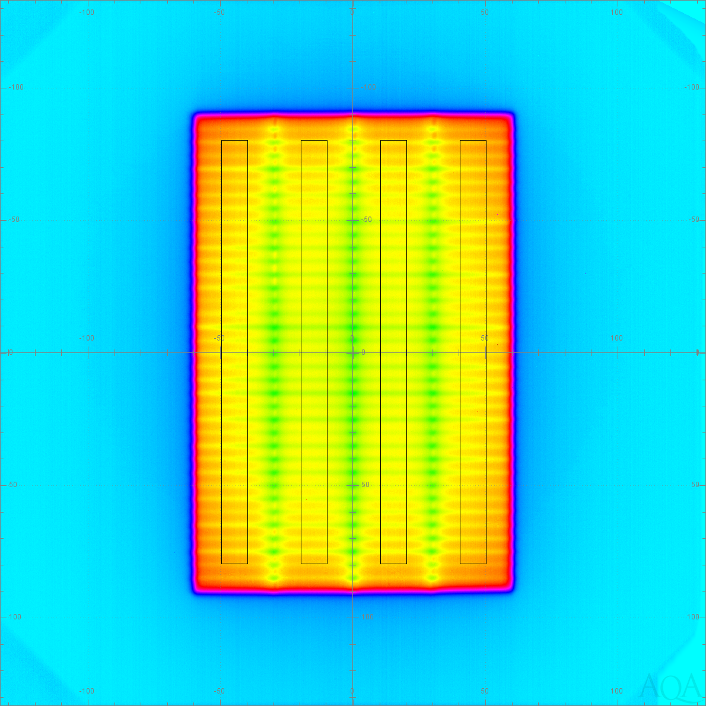
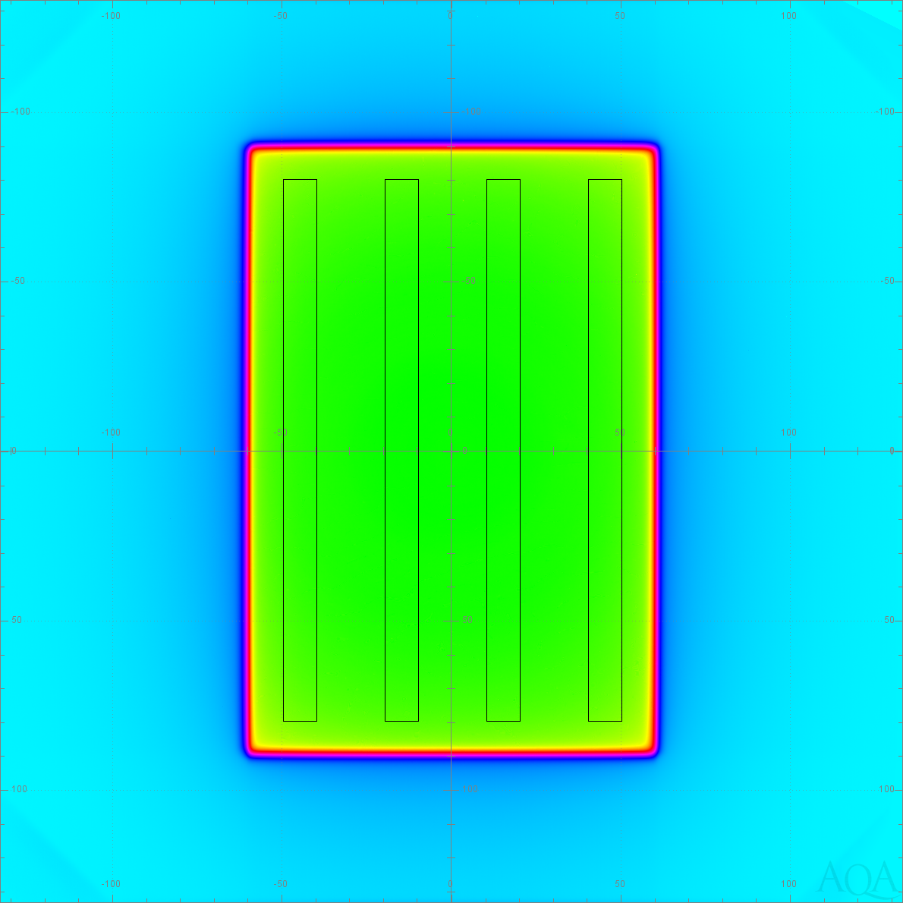

This performs a VMAT/RapidArc testing by taking areas of interest defined by the RTPLAN and dividing the value of each pixel in the MLC image by a corresponding OPEN image. The mean of those ratios is reported as the R corr value.
The first step is to use the plan to determine the areas of interest defined by the positions of the MLC. No image edge measurement or compensation for central axis is performed. The areas of interest are reduced by a fixed distance in mm (given as a configured value for each MLC/OPEN beam pair) towards their centers to reduce the penumbra effect of MLC leaves.
The AOIs are projected onto the images. Where edges cut through pixels, the partial value of the pixel inside the AOI is used. Accommodating partial pixels improves the quality of comparison between EPIDs of differing resolution.
The following image from a Millennium collimator shows the areas of interest.
Millennium Collimator (click for full sized image)|
 |
 |
Note: values are shown with greater precision to better verify math.
| Band Center | -4.5 cm | -1.5 cm | 1.5 cm | 4.5 cm |
|---|---|---|---|---|
| R LS : Avg CU of T3MLCSpeed | 0.071522 | 0.073772 | 0.073685 | 0.071354 |
| R Open : Avg CU of T3 Open | 0.518747 | 0.518747 | 0.532101 | 0.516463 |
| R corr : 100 * LS / Open | 13.787449 | 13.842872 | 13.847978 | 13.815838 |
| Diff(X) : R corr minus avg R corr | -0.035234 | 0.020189 | 0.025295 | -0.006845 |
| Average of absolute deviations (Diff) : Abs 0.021891 | ||||
Indicates the vertical center in the isoplane for each AOI.
Average of the pixel values for the AOI in the given MLC beam.
Average of the pixel values for the AOI in the given OPEN beam.
To calculate this, first a third virtual plane of pixels is created by dividing each pixel the MLC plane by its corresponding pixel in the OPEN plane. The R corr value is the mean of the pixels in the AOI of the virtual plane multiplied by 100 to convert it to a percentage.
Note that simply dividing the mean LS / Open values would produce a slightly different result. Calculating the values from the -4.5cm column above:
(0.071522 / 0.518747) * 100 = 13.787453
which does not equal the value used, which is: 13.787449
The mean of the R corr values is subtracted from the R corr value. If the absolute value of any column is greater than the configured limit (currently 1.5 percent) then the entire test is marked as failed.
For the above example, the mean is:
(13.787449 + 13.842872 + 13.847978 + 13.815838) / 4 = 13.823534
Yielding:
13.787449 - 13.823534 = -0.035234
13.842872 - 13.823534 = 0.020189
13.847978 - 13.823534 = 0.025295
13.815838 - 13.823534 = -0.006845
Calculated by taking the absolute value of each Diff(X) value and then taking their mean. If this value exceeds the configure limit (currently 3.0 percent) then the entire test is marked as failed.
For the example above, the calculation is:
(0.035234 + 0.020189 + 0.025295 + 0.006845) / 4 = 0.021891
{kind=link}
{kind=link}